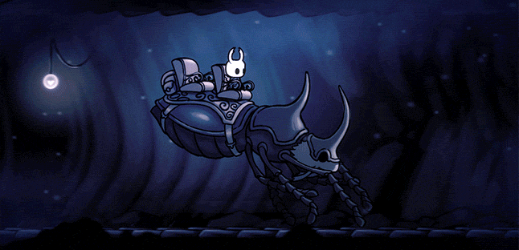

Xbox é uma marca de consoles de jogos eletrônicos criada pela Microsoft. O nome Xbox é incluído em uma série de consoles desenvolvidos pela Microsoft, desde a sexta geração até a nona geração de consoles, bem como o serviço on-line Xbox Live e Xbox Game Pass. A marca foi introduzida pela primeira vez em 15 de novembro de 2001, nos Estados Unidos, com o lançamento do console Xbox.
Xbox é uma marca de consoles de jogos eletrônicos criada pela Microsoft. O nome Xbox é incluído em uma série de consoles desenvolvidos pela Microsoft, desde a sexta geração até a nona geração de consoles, bem como o serviço on-line Xbox Live e Xbox Game Pass. A marca foi introduzida pela primeira vez em 15 de novembro de 2001, nos Estados Unidos, com o lançamento do console Xbox.O primeiro console da série, o Xbox, foi o primeiro console oferecido por uma empresa norte-americana após o Atari Jaguar em 1996. Ele chegou a mais de 24 milhões de unidades vendidas em 10 de maio de 2006. Seu sucessor, o Xbox 360, foi lançado em 22 de novembro de 2005 e descontinuado em 20 de abril de 2016. O sucessor do Xbox 360, o Xbox One, foi anunciado em 21 de maio de 2013 e lançado em 22 de novembro do mesmo ano.
"Dê força a seus sonhos"
Veja agora uma lista dos 5 melhores jogos selecionados por nossa equipe!

Enfrente as profundezas de um reino esquecido.
「 Hollow knight 」
Abaixo da cidade moribunda de Dirtmouth jaz um reino antigo e arruinado. Muitos são atraídos para o subterrâneo em busca de riquezas, glórias ou respostas para antigos segredos.
Hollow Knight é uma aventura de ação clássica em estilo 2D por um vasto mundo interligado.
Explore cavernas serpenteantes, cidades antigas e ermos mortais; lute contra criaturas malignas e alie-se a insetos bizarros, e solucione mistérios antigos no centro do reino.
O mundo de Hollow Knight ganha vida em detalhes significativos, suas cavernas ficam cheia de vida com criaturas bizarras e terríveis, todas animadas manualmente em estilo 2D tradicional.
Cada nova área que você descobrir é lindamente exclusiva e peculiar, cheia de novos personagens e criaturas. Explore e descubra os segredos ocultos do caminho em ruínas.
Se você gosta de jogos clássicos, personagens fofos mas assustadores, aventuras épicas e mundos lindos e góticos, Hollow Knight estará à sua espera!

"É agora, Madeline. Respira. Você consegue."
「 Celeste 」
Ajude Madeline a enfrentar seus demônios internos em sua jornada até o topo da Montanha Celeste, nesse jogo meticuloso e super afiado de plataforma dos criadores do clássico multiplayer TowerFall.
Os controles são simples e acessíveis - salte, faça dash aéreo e escale -, mas com camadas de profundidade para dominar, onde cada morte é uma lição. Renascimentos incrivelmente rápidos permitem que você continue escalando enquanto descobre os mistérios da montanha e desbrava seus perigos.
Uma aventura para um jogador focada em narrativa, com gostinho de infância, que conta com um elenco encantador e uma história emocionante de autodescoberta
Uma montanha gigantesca com mais de 700 telas de desafios de plataforma exigentes e segredos ardilosos
Capítulos de Lado B brutais para desbloquear, criados apenas para os alpinistas mais ousados
Finalista do prêmio "Excelência em Áudio" do IGF, com mais de 2 horas de música original lideradas por um piano impressionante e batidas memoráveis de sintetizadores
Lute para sair do inferno.
「 Hades 」
Hades é um jogo roguelike que combina os melhores aspectos dos títulos da Supergiant aclamados pela crítica, incluindo a ação rápida de Bastion, a rica atmosfera e profundidade de Transistor e a narrativa baseada em personagens de Pyre.
Na pele do imortal Príncipe do Submundo, você usará os poderes e as armas míticas do Olimpo para se libertar das garras do deus dos mortos, enquanto se fortalece e descobre mais sobre a história a cada tentativa única de fuga.
Os deuses do Olimpo vão te ajudar! Conheça Zeus, Atena, Poseidon e muitos outros, e escolha entre dezenas de Dádivas poderosas que aprimoram suas habilidades. Existem milhares de construções possíveis de personagens para descobrir à medida que avança.
Um elenco repleto de vozes de personagens pitorescos e impressionantes está esperando para conhecê-lo! Aprimore seu relacionamento com eles e vivencie centenas de eventos únicos da história enquanto aprende sobre o que realmente está em jogo para esta grande e disfuncional família.
Novas surpresas aguardam cada vez que você mergulhar no Submundo em constante mudança, repleto de chefes guardiões que nunca se esquecem de você. Use o poderoso Espelho da Noite para ficar permanentemente mais forte e aprimore suas habilidades na próxima vez que fugir de casa.
Atualizações permanentes significam que você não precisa ser um deus para vivenciar combates e histórias emocionantes. No entanto, se você é um deles, aceite o desafio e prepare-se para a ação emocionante que colocará suas habilidades bem praticadas à prova.


"Bem vindos à Borda Muito Distante"
「 Slime rancher 」
Slime Rancher é um jogo em primeira pessoa não-linear encantador. Jogue como Beatrix LeBeau: uma jovem e corajosa rancheira que parte para uma nova vida a mil anos-luz de distância da Terra, na Borda Muito Distante.
A cada dia, você enfrentará novos desafios e riscos para enriquecer no negócio de criação de slimes. Colete slimes coloridos, cultive plantações, colha recursos e explore os ermos bravios com a ajuda da sua inestimáel e versátil vacpack.
O renomado rancheiro, Hobson Twillgers, passou seu velho rancho para você. Recoloque-o em funcionamento, descubra os segredos ocultos neste planeta misterioso e domine o Mercado de Plorts.
Cultive plantações e crie pintontos para alimentar a sua coleção de slimes esfomeados.
Complete pedidos de troca diários de outros rancheiros para obter recompensas extras.
Ganhe dinheiro para aprimorar sua vacpack, construir mais currais ou expandir o seu rancho.
Use a Ciência slime para encontrar recursos raros, crie objetos de decoração e construa artefatos para ajudar em suas aventuras.
Explore um vasto mundo repleto de segredos e tesouros escondidos.

Sem checkpoints. Mate, morra, aprenda, repita.
「 Dead cells 」
Você cresceu jogando roguelikes, testemunhou a ascensão dos roguelites e talvez até mesmo o nascimento dos roguelite-lites? Agora queremos apresentar para você o nosso RogueVania, o filho ilegítimo dos modernos roguelites (Rogue Legacy, Binding of Isaac, Enter the Gungeon, Spelunky etc.) e do antigo MetroidVania (Castlevania: SotN e seus antecessores).
RogueVania: Exploração progressiva de um mundo interconectado, com a rejogabilidade de um rogue-lite e a adrenalina que traz a ameaça da morte permanente.
Ação em 2D tipo Dark Souls: Combates difíceis mas justos, mais de 50 armas e feitiços com jogabilidade única, e é claro, o rolamento de emergência para tirar você de qualquer sufoco.
Progressão não linear: Esgoto, Ossuário ou Muralhas? Depois de serem desbloqueadas, as habilidades permanentes possibilitam que você acesse novos caminhos para cumprir seu objetivo. Escolha um caminho de acordo com suas habilidades e equipamentos, seu modo de jogar ou apenas seu humor.
Exploração: Salas secretas, passagens ocultas, cenários encantadores. Aproveite a brisa nas torres e sinta o ar fresco batendo no rosto...
Fases interconectadas e o desbloqueio progressivo da ilha incentivam a exploração dos arredores. Adicione um pouco de evolução do personagem e melhorias permanentes das armas e você vai ver como Dead Cells se inspirou na linhagem dos MetroidVanias que o precedem.
No fim das contas, são as SUAS habilidades como jogador que importam! Roguelites incentivam a melhoria contínua, até que aquele obstáculo que parecia insuperável se torne um passeio no parque. Combates impiedosos junto com a ausência de qualquer rede de proteção aumentam a adrenalina de cada partida com uma rejogabilidade sem igual.

△